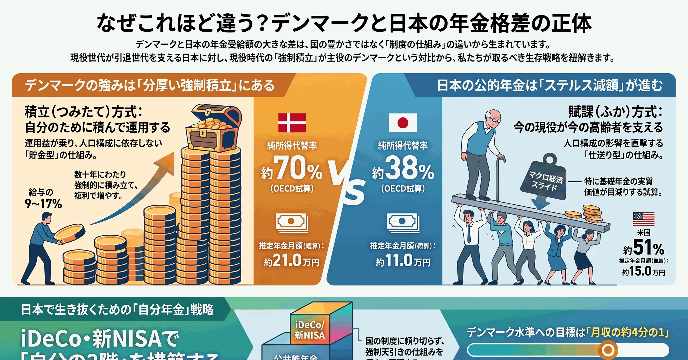
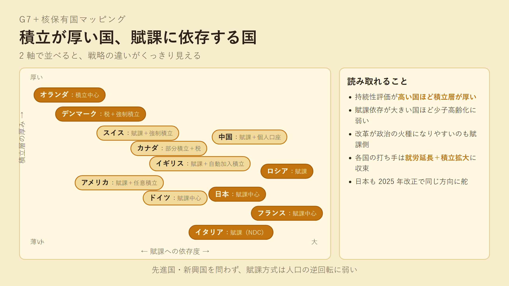
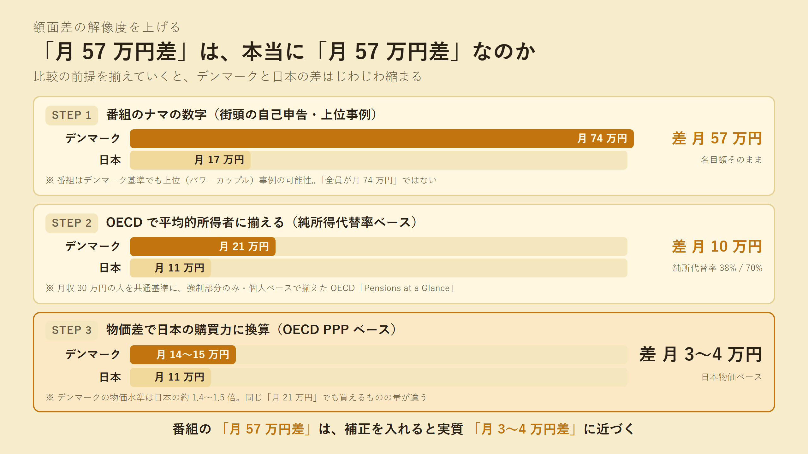
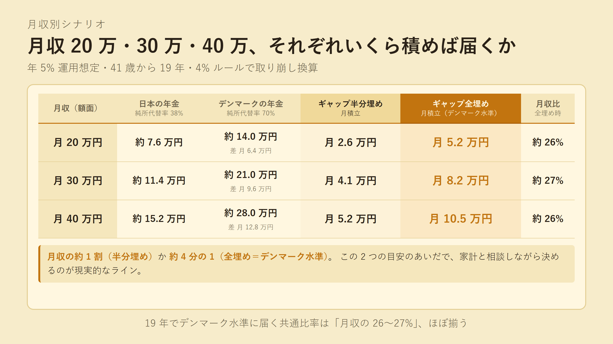

記事全体を 1 枚に要約したインフォグラフィック（NotebookLM 生成）。
テレ東『世界の給与明細』のデンマーク年金回をきっかけに、世界の年金制度を整理してみました。デンマークの月 74 万円という派手な数字を、パワーカップル補正・OECD 公平比較・物価差換算と 3 段でほぐすと、日本との本当の差は月 3〜4 万円相当まで縮みます。 一方で日本の基礎年金は実質 2 割ほど目減りする試算で、結論は「崩壊はしない、ただ静かに目減りする」。動かせる範囲を、iDeCo・新 NISA で自分名義の積立 2 階を作って 19 年で動かす、という話です。
「デンマークの夫婦が月 74 万円ずつもらっている」というテレビの場面を観て、純粋に「人口 600 万人ちょっとの国が、なぜそんなに払えるのか」と気になったのが出発点でした。 調べていくと、自分が「年金」とひとくくりにしていたものが、性質のまったく違う 2 つの仕組み（賦課方式と積立方式）の混合物だと分かり、それが巷でよく見る「年金崩壊論」を冷静に読むための補助線になった、というのが記事の骨格です。
扱った論点は次のあたりです。年金には「集めて即配る賦課方式」と「天引きして運用して返す積立方式」の 2 種類があり、デンマークの手厚さは積立 2 階の分厚さから来ていること。G7 ＋核保有国を並べると、持続性評価が高い国ほど積立層が厚く、賦課依存の大きい国（仏・伊・日）ほど少子高齢化に弱いこと。日本も最初は積立で始めたが、戦後インフレと政治で賦課方式に移した歴史があること。1961 年と 2024 年で平均寿命が 15〜16 歳延び、賦課方式の前提（短い受給・多い現役）が構造的に崩れていること。GPIF の累積運用益 155 兆円が直接給付に還元されない設計上の理由。そして、月収 20 万 / 30 万 / 40 万の人がデンマーク水準に届くには、月収の約 4 分の 1 を 19 年積み続ける必要がある、という個人レベルの試算です。

G7 ＋ 核保有国を 2 軸で並べると、戦略の違いがくっきり分かれる。デンマーク・オランダ・スイス・カナダは積立層が厚く、フランス・イタリア・日本は賦課依存側に。各国の改革は「就労延長＋積立拡大」に収束している。

番組のナマ数字（月 74 万 vs 月 17 万、差 57 万）を、パワーカップル補正で月 10 万差に、物価差換算でさらに月 3〜4 万差に縮めていく流れ。差そのものは消えないが、最初の額面差をそのまま「制度の格差」と読み替えるのは解像度が粗すぎる、というのが今回の収穫。

月収 20 万なら月 5.2 万、月収 30 万なら月 8.2 万、月収 40 万なら月 10.5 万。「月収の約 4 分の 1」が、19 年でデンマーク水準に届く共通のものさし。20 代から始められれば、もっと低い比率で同じゴールに届く。
残りの一次ソース（簡易生命表・JETRO・JILPT・OECD Data Explorer 等）は note 本文の末尾「参考・一次ソース」セクションを参照してください。